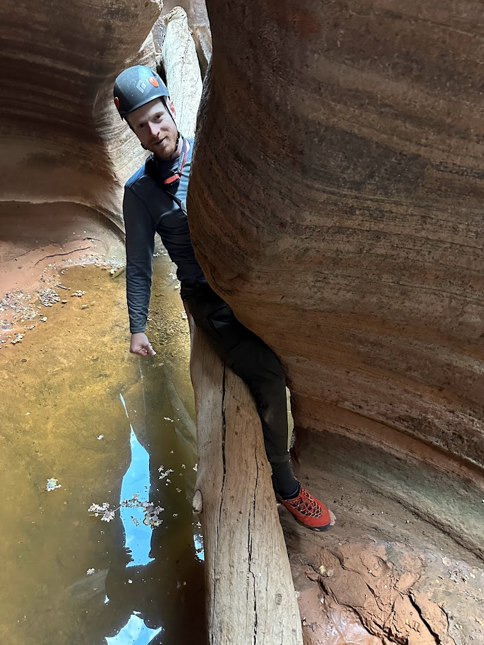

I'm a Senior Bioinformatics Scientist at Pacific Biosciences (PacBio). My work focuses on structural genome variation and improving the quality of PacBio HiFi read data.
I am the developer for SVTopo, a HiFi-based tool for visualizing complex structural variants. The tool determines connections between SV breakends and creates high-quality visualizations showing the order and orientation of rearranged genomic segments. This work was presented at ASHG 2024 and the tool is publicly available.
From June 2021 - May 2023 I worked at Illumina as a Bioinformatics Scientist. My work at Illumina dealt with repetitive regions of the genome, such as targeted variant calling for the cardiovascular-disease related LPA gene.
Read the white paperI also worked on a manuscript, which currently resides on BioRxiv but is in the process of submissions and peer review for journal publication.
I analyzed the rates and patterns of spontaneous SVs in a very large Autism Spectrum Disorder family cohort as well as a cohort of large, multigenerational Utah families to learn more about how often these variants occur, what effects they have in ASD risk, the impact of parental age on SV risk, and the molecular mechanisms responsible.
Visually reviewing the sequencing evidence for SVs is very important, because lots of false positives variant calls occur. Samplot facilitates making plots, filtering, and even curating via a deep learning classifier.
Published in Genome BiologyI developed a tool for creating image views of genomic intervals, automatically storing them in the cloud, deploying a website to view/score them, and retrieving scores for analysis, with support for sequencing data from BAM or CRAM files from Illumina, or long-read technologies (ONT/PacBio).
Published in GigaScienceI worked with Justin Miller, under the supervision of Dr. Ridge, in a project targeted toward understanding evolutionary implications of non-random codon bias.
Published in CladisticsIn a project for a BYU CS Capstone in Big Data, my team (Artem Golotin, Darian Ramage, and I) developed a scalable system for monitoring streaming seismic signals in a developing aftershock sequence. This could be used to study earthquakes in more detail (as well as to identify illicit nuclear testing). Presented at LLNL and BYU.
I'm passionate about outdoor adventures in all seasons.
